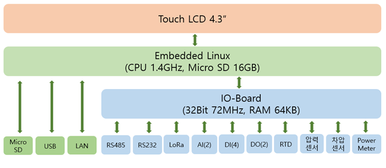

Block Diagram
스마트콤보 디바이스(ITMS-850)는 센서 데이터를 수집하고, 선택된 프로토콜을 사용하여 원격서버로 전송하는 어플리케이션이 실행되는 본체와 터치스크린이 결합된 컨트롤러 장치와 센서 인터페이스가 포함된 입/출력 포트를 관리하는 I/O보드 장치로 구성되어 있습니다.

H/W Specifications
컨트롤러와 I/O보드의 하드웨어 사양은 다음과 같습니다.
| 구분 | 항목 | 내용 | 비고 |
|---|---|---|---|
| 컨트롤러 | 본체 | Raspberry 3B+ | OS : Linux |
| LCD | 4.3인치 TFT LCD | ||
| I/O보드 | MCU | ARM(R)-based 32-bit MCU | |
| RTC | RTC 및 코인배터리 | ||
| RS-232 | Rx, Tx, GND | Ports = 1 | |
| RS-485 | TRx+, TRx-, GND | Ports = 1 | |
| DI | Isolated by Photo-coupler Dry Contact Analog Singal Input : 24V |
Open/Short 접점신호 입력 0~24V전원 신호 입력 Ports=4 |
|
| DO | Isolated by Relay 출력 | 접점 출력 24V/2A 전원 출력 Ports=2 |
|
| AI | 4~20mA 출력(12bit 해상도) | 3~24V 동작 전류 측정 Ports=2 |
|
| CT | 0~5A 측정 / AC 380V MAX | ||
| RTD | 외부 RTD 3선식 연결포트 | 온도 측정(외부 3선식 온도계) | |
| 차압센서 | 0~1,000 mmH2O | ||
| 압력센서 | 0~10,000 mbar | ||
| 입력전원 | 24V / 2.5A | 24V아답터 사용 |